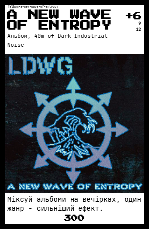
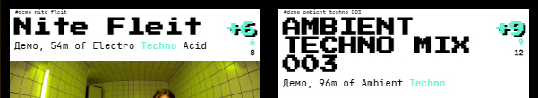
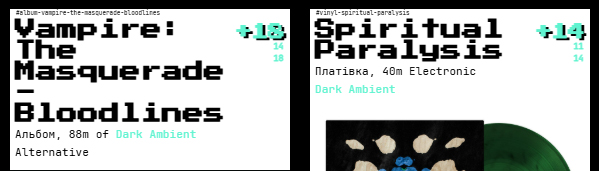
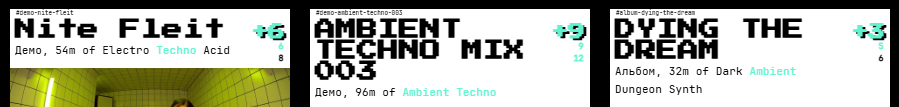
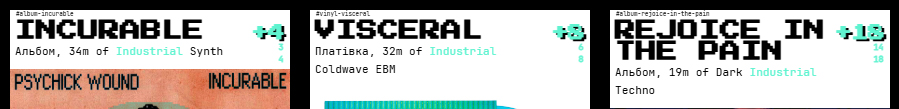
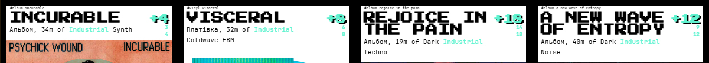
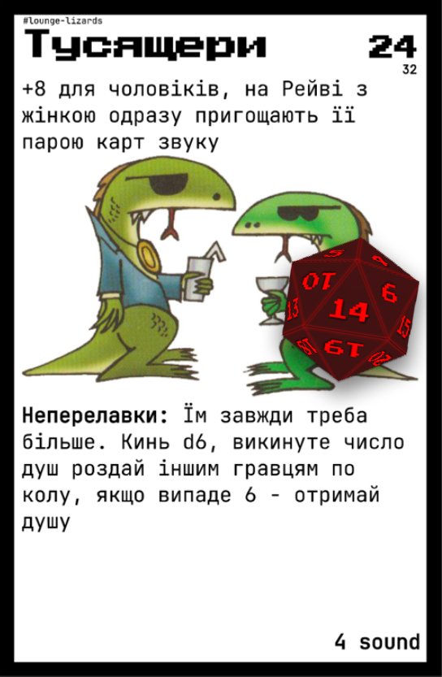
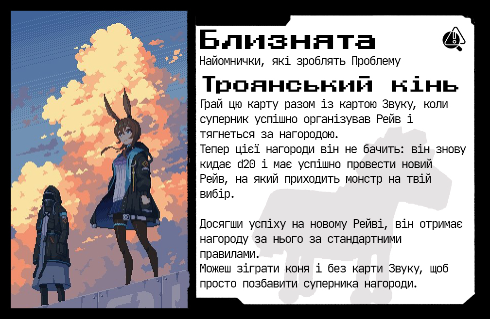

5 в руку кожному, інші перемішайте і покладіть у центр
Альбоми з жанрами та бонусами – основа майбутніх лайнапів.
Карти монстрів
Перемішайте і покладіть у спільну колоду поруч із звуком
Гості з рівнями, нагородами та непотребами.
Кубик d20 и d6
по одному на всіх
Визначають очікування та результати різних ефектів.
Кристали душ
Висипати всі довкола монстрів
Візьми собі 2 за кожний успішний Рейв
🎚️Послідовність ходу
В свій хід кожен з вас стане організатором Рейву.
Мета ходу — зібрати крутий лайнап, успішно провести Рейв і заробити душі.
Перший хто збере 10 душ - перемагає у грі.
1. Визначаємо Очікування публіки
Кидаємо d20 — результат і є рівнем очікувань.
Коли кличемо монстрів — додаємо їхній рівень.
2. (Необов'язково) Кличемо Монстра
До того як викласти першу карту лайнапу, гравець може скинути одну карту звуку, щоб запросити випадкового монстра.
Монстр підвищує потенційну нагороду, але й підвищує рівень очікувань.
Рівень монстра додається до очікувань (див. далі).
3. Викладаємо карти звуку
Гравець починає викладати карти звуку у свій лайнап.
Кожна карта дає бонус звуку (+2, +3 тощо) — він додається до загальної крутості лайнапа.
Карти з однаковим жанром можуть створювати комбінації, які підсилюють лайнап (див. нижче).
4. Порівнюємо крутість лайнапа з очікуваннями
Підсумовуємо бонуси звуку + застосовуємо множники від комбінацій (див. нижче).
Якщо крутість ≥ очікування — рейв вдався.
Якщо крутість < очікувань — фейл.
5. Наслідки рейву
Вдалий рейв:
Отримай 2 душі.
Якщо був монстр — додаються його нагороди (душі й нові карти).
Одну карту звуку з лайнапа можна повернути в руку. Але не ту саму двічі.
Невдалий рейв:
Отримай кару від монстра, якщо він був. Це називається неперелавки.
Можна уникнути, якщо кинути d20 і вибити 16+ — врятувався.
Обнулення — найгірші неперелавки: втрачаєш усе і чекаєш респавну (див. нижче).
💸Трейд
Якщо не вистачає потрібного звуку — завжди можна купити більше.
Раз за хід, у будь-який момент до початку рейву, гравець може витратити 1 душу, щоб:
Взяти три нові карти звуку з колоди.
Це дає шанс:
Знайти потрібний жанр для комбінації.
Замінити нудні карти на потенційно потужні.
Підготуватися до зустрічі з монстрами.
Душа при цьому назавжди втрачається — це інвестиція в майбутнє.
🔕Пас
Іноді найкращий рейв — це той, що не відбувся. Гравець може відмовитись від рейву у свій хід, зробивши Пас.
Пас можна зробити тільки на початку ходу, до будь-яких інших дій.
При пасі гравець просто добирає карти, як зазвичай, і передає хід.
Це може бути тактичним рішенням:
Щоб накопичити карти.
Щоб дочекатися кращого лайнапу.
Щоб уникнути небезпечних монстрів.
Важливо: пас не скасовує можливість трейду.
🚷Врив
«Коли підкинуті монстри не допомагають перевершити суперників, будь-хто може взяти на себе їхні обов’язки і самостійно показати, хто тут Бос...»
Коли хтось уже близький до омріяної позначки у 10 душ і ось-ось стане переможцем,
ти можеш захотіти почати свій рейв у чужий хід — не щоб розділити тріумф,
а щоб забрати його душі, переманити монстрів на свій бік і залишити невдаху терпіти неперелавки.
Це називається Врив.
⚡Коли можна вриватись
Ти можеш увірватись, коли:
Інший гравець викладає свій лайнап
Ти ще не використав свій врив в цьому колі
Врив доступний один раз за коло, як будь-яке гарне зло.
🤜Як почати врив?
Просто почни викладати власний лайнап у чужий хід
Доповнюйте свої лайнапи по черзі з суперником, поки можете
Той, хто зрештою переможе:
Забирає все: 2 душі за успіх, нагороди від монстрів, можливість знайомитись з ними та повернути карту звуку з будь-якого лайнапу.
Той, хто зазнав поразки:
Втрачає стільки душ, скільки за цей рейв заробив його суперник, а також терпить непотребства кожного монстра.
🧊Як захиститись?
Кожен гравець може покликати на допомогу — це називається “Дзвінок другу”.
Про це — у наступному розділі.
🔔Дзвінок другу
Коли організовуєш рейв для монстрів з високими стандартами, не мусиш тягнути все сам. Завжди можна попросити допомоги — у когось із колег.
Як працює Дзвінок другу:
Ти заявляєш, що робиш Дзвінок другу. Це може бути будь-який інший гравець.
Друг погоджується — або ні.
Це його вибір. Він може:
Запропонувати винагороду за допомогу (душі, карти, поцілунок у лобик — що завгодно).
Допомогти безкоштовно — якщо у вас уже є союз або він бачить у цьому вигоду.
Відмовити — якщо не хоче, щоб ти став сильнішим.
Якщо друг погодився, рахуєте спільну силу:
Сумуєте Звук твого лайнапу і лайнапу друга.
Враховуєте жанри і бонуси обох лайнапів.
Отримуєте всі переваги як єдина команда.
Якщо перемогли — нагорода ділиться за попередньою домовленістю.
Якщо програли — кожен втрачає по душі і терпить непотребства монстрів.
Важливо:
Допомога за Дзвінком — не обов’язок, а вибір. Це простір для дипломатії, шантажу і угод.
Іноді вигідніше не допомагати, щоб противник ослаб і не отримав душі.
🎭Фінал гри
Коли один із гравців, маючи 8 або 9 душ, починає Рейв, до нього автоматично приходять два випадкові монстри — починається фінальний раунд.
Їх рівні додаються до очікувань, і той, хто їх перевершить, а також бонус лайнапу всіх інших гравців — забере всі нагороди фінального раунду.
Під час фінального раунду не діє обмеження на допомогу Захопнику — кожен може підкидати карти в будь-який лайнап.
У цьому раунді кожен гравець зацікавлений не дати іншим перемогти, використовуючи для цього:
Підкидання пасажирів
Ефекти багів
Врив
Врив з Помічником
Можливе тільки у фінальний раунд. Об’єднуючи сили з іншим гравцем, простіше досягти успіху проти претендента. Але навіть якщо за рахунок цього хтось із вас набере понад 10 душ — ніхто не стане чемпіоном, і кількість душ скидається до 9, бо чемпіон може бути тільки один.
Усі гравці, які брали участь і не досягли успіху у фінальному раунді, втрачають 2 душі та терплять непотребство монстрів. У наступний хід вони можуть знову спробувати пройти Фінал.
🔊Карти звуку: що де знаходиться

Назва альбому
Бонус звуку - у верхньому правому кутку, позначений знаком "+".
Жанри звуку — одне або кілька ключових слів під назвою.
🔁Комбінації звуку (підсилювачі лайнапу)
Твікс
2 карти, хоча б 1 загальний жанр ⇒ Обидві карти: бонус x1.5 (з округленням догори)

Твікс-ап
2 карти, по 2 загальні жанри ⇒ Обидві карти: бонус x2

Сет
3 карти, з боків по 1 жанру, в центрі збігаються обидва ⇒ Ліва+права: x1.5, центр: x2

Сет-ап
3 карти з однаковим жанром ⇒ Усі карти: бонус x2

Лайн-ап
4+ карток з одним і тим же жанром ⇒ Усі картки: бонус x2

😈Монстри
Монстри — особливі гості на рейвах. Вони приходять, коли гравець скидає одну карту звуку перед кидком на очікування. Це ризик, але й можливість: монстр підсилює очікування, але дає додаткову нагороду за успіх.
🔹Як запросити монстра
Скинути 1 карту звуку
Витягнути випадкового монстра з колоди
Покласти його обличчям вгору поруч із лайнапом
Відтоді монстр стає частиною рейву.
📈Рівень монстра
Кожен монстр має рівень — число у верхньому правому куті. Цей рівень додається до очікувань, підвищуючи планку успіху.

Наприклад, якщо d20 = 14, а монстр рівня 24, то підсумкові очікування = 38.
🎁Нагорода за монстра
+2 душі (як за звичайний успішний рейв)
Додаткові бонуси від монстра:
💿 Нові карти звуку (нижній правий кут)
💀 +1 або +2 душі, якщо це вказано в нижньому лівому куті
Нагорода від кількох монстрів не сумується, а береться максимальне значення.
💥Неперелавки
Якщо рейв не вдався (рівень крутості лайнапа нижчий за очікування), монстр застосовує неперелавки — ефекти, вказані під нагородами.
Скинути карти звуку
Втратити душі
Обнулення (див. нижче)
Після неперелавок гравець може спробувати втекти, кинувши d20. Якщо випало 16 або більше — неперелавки не діють.
🔄Обнулення
Скидає всі карти
Нічого не може робити, доки не буде респавнутий
За витрачену душу будь-хто може респавнути гравця
Після респавну гравець отримує 5 карт звуку і може використовувати їх або чекати ходу
Якщо душ немає і ніхто не хоче допомагати — гравець вибуває
🌀Після рейву
Після будь-якого результату — успіху чи провалу — монстр повертається в випадкове місце колоди монстрів.
👥Підкинути пасажира
Поки йде рейв, інші гравці можуть скинути 2 карти звуку, щоб:
Підкинути монстра організатору
Підвищити очікування рейву
Можна скинути й більше карт для додаткових монстрів (3 карти → ще один монстр, 4 карти → ще один і т.д.). Гравці можуть скидатись разом.
🤝Найомнички

У кожного монстра є зворотній бік — на ньому ховається Найомничок. Це не просто картковий прийом, а символ моменту, коли на перший погляд відразливий незнайомець, виявляється класним хлопцем, готовим допомогти.
🔄Як познайомитись з монстром
Скинь карту звуку і кинь d20.
Якщо випало 10 або менше — ви не підійшли один одному, спробуй з кимось іншим.
Якщо випало більше 10 — перегорни карту монстра, тепер це Найомничок, готовий допомогти.
Поклади його поруч із собою та уважно прочитай текст його багу.
📌Що пропонують Найомнички?
Баг — один раз використати його унікальну властивість, після чого Найомничок обернеться стороною монстра та чекатиме можливості увірватись на новий Рейв.
Рукав — потримати одну карту звуку.
🛠Типи багів
Проблема — створює неприємності супернику, забираючи у нього карти звуку, душі або і те, і те.
Виклик — викликає одного або кількох монстрів на будь-який рейв.
Баф — дає корисний бонус гравцю, на якого застосовано.
Ескейп — допомагає позбутися одного або всіх монстрів на рейві.
Контрспелл — повертає карту тому, хто її щойно використав, або перенаправляє ефект на іншого гравця.
♻️Найомничок чи Монстр?
Використавши баг Найомничка оберни його стороною Монстра.
Він і далі триматиме для тебе карту звуку, але щоб знову використати його баг, знадобиться знову запросити його на свій Рейв та досягти успіху.
На щастя для тебе запрошення цього монстра більше не потребує скидання карти звуку. Крім того нічого не забороняє тобі підкинути його у чужий Рейв, не скидаючи жодних карт, адже ви вже знайомі.
🫂Рукав
Найомнички вміють не лише змінювати хід гри своїми багами, а й тримати твої зайві карти звуку в Рукаві.
Якщо на руці більше 5 карт, зайві кладуться під Найомничка рубашкою догори, щоб зберегти їх.
У свій хід ти можеш:
Підкинути карту в свій лайнап, посиливши комбінацію.
Відправити карту в лайнап іншого гравця — це не робить вас союзниками, але може посилити чужий лайнап.
Карти не можна брати назад із рукава — лише використовувати одразу.
Якщо Найомничок йде, карта в рукаві залишається.
Рукав дає гнучкість колоді та можливість впливати на чужі рейви непомітно.
🛑Обмеження: не більше 3 найомничків
Гравець не може мати більше трьох активних Найомничків одночасно. Щоб взяти нового, треба обрати, кого відпустити.
Найомничок залишається з тобою, доки ти не втратиш їх через дії інших гравців або неперелавки монстрів.
Післямова автора
Тут надано максимально докладну версію правил. Розраховується, що у вас є повний набір з усіма картами гри, якщо якісь правила або карти здаються тобі незнайомими, просто ігноруй їх.
Оберіть Чувака, чиє слово буде фінальним у неочевидних питаннях(як правило це найбільш обізнана у правилах людина) і почувайтеся вільно обговорювати правила, які здаються вам спірними та змінювати їх на користь фана всієї компанії, головне будьте впевнені, що всі залишаються задоволені.